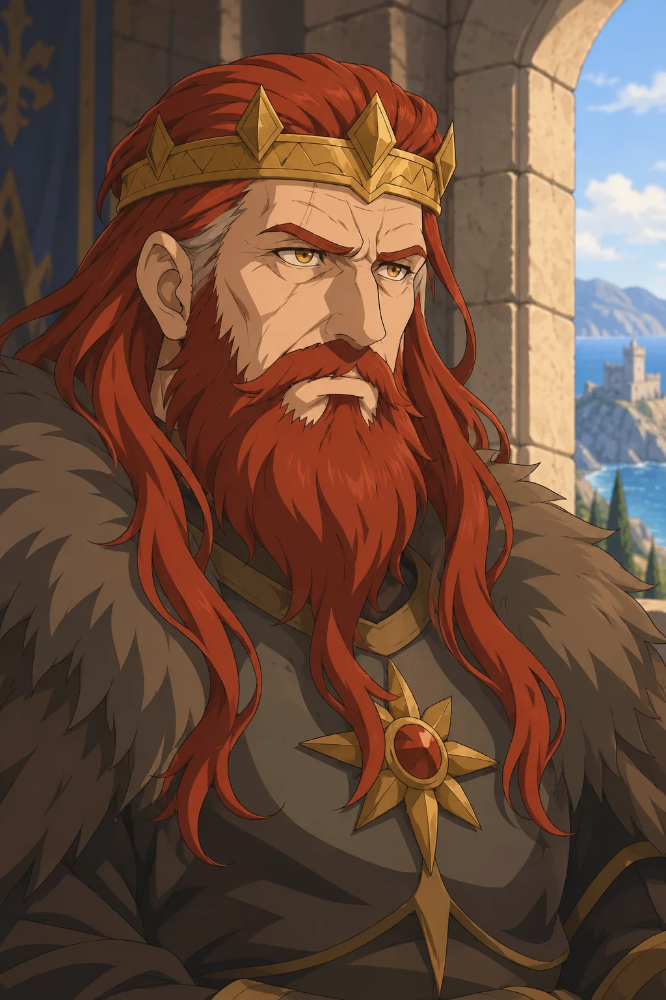
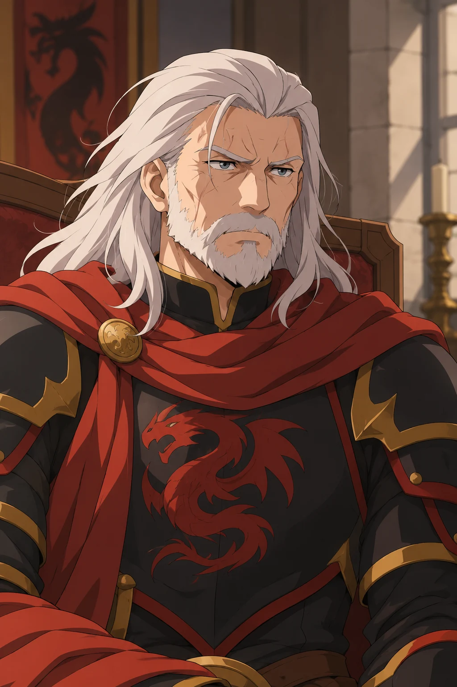
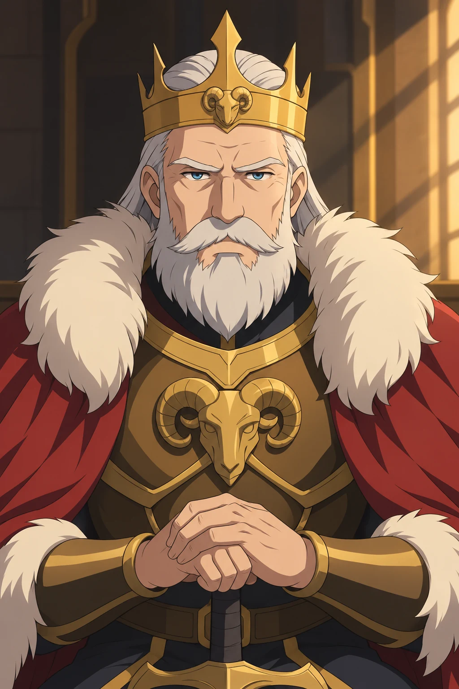
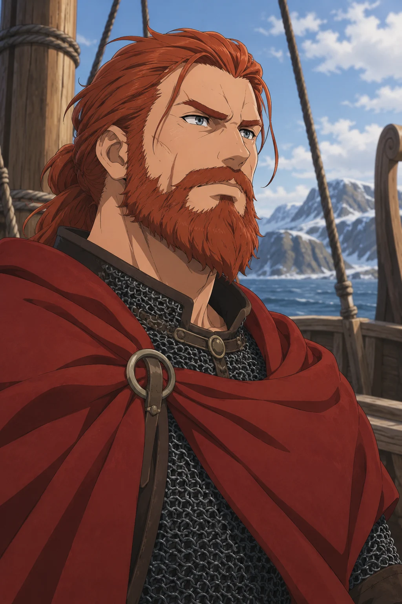

Die Invasion von Vennyr im Jahr 1717 markiert einen Wendepunkt in der Geschichte des Königreichs, als die Nordmänner des Hohen Nordens, angeführt von den mächtigen Clans der Nordmannen, einen erneuten Versuch unternahmen, das Land zu erobern, das sie als ihre angestammte Heimat betrachteten.
Vier Figuren im Jahr 1720
Die drei genealogisch belegten Altersangaben beziehen sich auf das Jahr 1720. Die genaue Jahreszeit ist nicht bekannt. Die Bilder ersetzen keine historischen Porträtquellen.




Ein altes Land, ein erneuter Anspruch
Die Invasion von Vennyr ist der Höhepunkt eines lange schwelenden Konflikts zwischen den Nordmännern, abstammend von den Norrnaigh des hohen Nordens, und dem Königreich Vennyr, das einst von den Muirath und später von den Avallorniern beherrscht wurde. Die Nordmänner, angeführt von Ketill dem Roten und unterstützt durch die mächtigen Clans Draca, Geit, Ulf, Hjort und Orn , sehen Vennyr als ihr rechtmäßiges Erbe an, da ihre Vorfahren einst in diesem Land lebten, bevor sie von den Avallorniern verdrängt wurden. Im Jahr 1717 nutzen die Nordmänner eine Phase der politischen Instabilität und Isolation Vennyrs, um erneut zu versuchen, das Königreich zu erobern, das sich bislang unter der Blodyn-Dynastie gegen alle früheren Angriffe behauptet hatte.
Hintergrund und Ursachen
Die Ursachen, die zum Krieg führten, reichen tief in die Geschichte des Nordens und des Königreichs Vennyr zurück, und sie wurzeln in einem komplexen Netz aus alten Rivalitäten, geografischen Veränderungen und dem Stolz der Clans des Hohen Nordens.
Die Norrnaigh , ein widerstandsfähiges Volk aus dem kargen und unwirtlichen Norden, hatten in früheren Epochen in der Region des heutigen Vennyr gelebt, als die Welt milder war und ihre Schiffe die südlicheren Meere durchkreuzten. Sie lebten in steter Konkurrenz mit den Muirath, die damals die Herrschaft über Vennyr innehatten. Die Muirath waren ein mystisches Volk, eng verbunden mit der Natur auch bekannt als Sturmalben . Ihr Königreich war ein blühendes Land mit fruchtbaren Böden und reichen Ressourcen. Diese Zeit war jedoch von immer wiederkehrenden Überfällen und Kämpfen zwischen den Norrnaigh und den Muirath geprägt, die in der sogenannten Epoche der Seefahrer gipfelten, als die Norrnaigh begannen, sich aggressiv nach Süden auszubreiten.
Als das Klima kälter wurde, und die Lebensbedingungen im Hohen Norden rauer wurden, waren die Norrnaigh gezwungen, neue Länder zu suchen, in denen sie überleben und gedeihen konnten. Vennyr, mit seinem gemäßigten Klima und seinen Ressourcen, war für sie das begehrte Ziel. Obwohl die Muirath tapfer Widerstand leisteten, gerieten sie schließlich unter den Druck der unaufhörlichen Angriffe der Norrnaigh ins Wanken. Doch bevor die Norrnaigh das Land endgültig in Besitz nehmen konnten, kamen die Avallornier, Nachfahren der Tannath, und brachten den Krieg zu den Eindringlingen zurück.
Die Avallornier, selbst ein mächtiges Volk aus dem Westen, sahen sich als Beschützer des Landes und seiner Bewohner. Sie gründeten das Königreich Vennyr und errichteten eine Herrscherdynastie, die sich mit den überlebenden Muirath vermischte. So entstand ein neues Reich, das Vennyr in den folgenden Jahrhunderten zu einem blühenden Zentrum machte. Für die Norrnaigh war dies jedoch ein schmerzlicher Verlust, denn sie sahen in Vennyr nicht nur ein Land von materiellem Wert, sondern auch eine Heimat, die ihnen entrissen worden war.
Über die Jahrhunderte hinweg lebten diese Erinnerungen in den Liedern und Legenden der Nordmänner fort, und die Clans bewahrten sich den Traum, Vennyr eines Tages zurückzuerobern. Jede Generation wuchs mit dem Glauben auf, dass es nur eine Frage der Zeit sei, bis sie in ihre "rechtmäßige" Heimat zurückkehren würden. Immer wieder gab es Versuche, das Königreich anzugreifen, aber die Macht der Blodyn-Dynastie, die im Laufe der Jahrhunderte gefestigt wurde, und die alliierten Kräfte des Südens verhinderten eine erfolgreiche Rückeroberung.
Im frühen 18. Jahrhundert jedoch begann sich die Machtbalance zu verschieben. Durch Kriege und politische Umwälzungen in anderen Teilen der Welt war das Königreich Vennyr zunehmend isoliert. Die Blodyn-Dynastie konnte sich nicht länger auf ihre mächtigen Verbündeten verlassen, und im Hohen Norden wurden die Clans, angeführt vom ehrgeizigen Ketill dem Roten Drachen, wieder einmal mutiger. Die Draca, Geit, Ulf, Hjort und Orn, alteingesessene Clans, die einst die Krieger des Nordens stellten, sahen ihre Chance gekommen.
Unter dem Banner des Hochkönigs der Nordmänner vereinten sich die Clans und begannen, Vennyr erneut ins Visier zu nehmen. Ketill, ein charismatischer Anführer, konnte viele Krieger um sich scharen, die nicht nur nach Ruhm und Beute, sondern auch nach einem Platz suchten, der in ihren Legenden als "verlorenes Heimatland" gepriesen wurde. Die geopolitischen Verwerfungen boten ihnen eine Gelegenheit, die in früheren Generationen nie dagewesen war: Vennyr war verwundbar, und die Welt war abgelenkt.
Der Verlauf des Krieges
Die Reihenfolge innerhalb eines Jahres folgt der Vorlage; genaue Tages- und Monatsdaten sind nicht überliefert.
1717
- Beginn des "Konfliktes"
- Das Hohe Königreich des Nordens eröffnet die Feindlichkeiten mit vermehrten Überfällen und Geplänkeln
- Erste Überfälle der Nordmänner auf abgelegene Küstendörfer Vennyrs, um Vorräte und Schiffe zu plündern.
- Kleine Schlachten und Handgemenge an der Küste, bei denen Vennyrs Streitkräfte erste Verluste erleiden, aber die Angreifer sich zurückziehen.
- Es kommt zur ersten großen Seeschlacht bei Caer Ynys
- Die Nordmänner werden zurückgeschlagen
- Caer Gorwel wird kurzfristig Belagert
- Die Gwaedlyd können der Belagerung standhalten, die Nordmänner beißen sich die Zähne an der Burg aus und müssen sich neu formieren
- Es kommt zur ersten Seeschlacht im Meer der Geister
- Die Nordmänner werden im Meer der Geister erneut zurückgedrängt.
1718
Für dieses Jahr sind in der Vorlage noch keine konkreten Ereignisse ausgearbeitet.
1719
- Der Vereinten Flotte Cenyr und Vennyrs gelingt es die Nordmann Flotte in der Seeschlacht bei Caer Gorwel vernichtend zu schlagen
- Rhodri Draig wird bei der Schlacht schwer verwundet, er zieht sich zurück
- Die Nordmannen ziehen sich scheinbar geschlagen zurück
- In Ceitheach entstehen unruhen
- Der Krieg mit Ceitheach beginnt, Vennyr, Cenyr und Aldrimar schließen sich den übrigen Alben an
1720
- Llyndor wird durch eine Naturkatastrophe verwüstet, viele sterben, einige können fliehen
- Nach der "Schlacht der tausend Wellen" ist die Vennyri Flotte zerschlagen und ein großteil des Heeres ausgedünnt
- Banditen der Schwarzblut Marodeure stellen die Gebirgspässe zu und verhindern die Flucht nach Aldrimar
- Das Volk soll nach Mynyddharbwr und zu den Rettungsschiffen, um nach Cenyr zu fliehen
- Haus Walwrs ziehen sich zurück aus Traeth
- Die Trachwyll geben ihre Stadt Talfronwyn auf, die Diafol sind enttäuscht über ihre Herren und übernehmen die Verteidigung der Region
- Die Diafol verteidigen sich gegen die Übermacht des Hronulf und Hjort Clans
- Haus Diafol schlägt sich tapfer, können dem Ansturm aber nicht standhalten, sie ziehen sich zurück
- Clan Orn hat den Auftrag die Region rundum Branon einzunehmen, die Blaidd leisten widerstand
- Zauberin Tangwistle überzeugt Haus Blaidd zur Flucht, es kommt zum Magierduell bei Branon
- Hexenmeister Valthor Orn wird von Tangwistle im epischen Duell, genannt "Hexenfall" bezwungen, die Stadt Branon wird dabei vernichtet
- Einer erschöpfte Tangwistle flieht, die Orn nehmen die restliche Region ein, Branon wird in Hexenfall umbenannt
- Clan Geit greift Gwynlann an, die verbleibenden Streitkräfte der Dianc verteidigen die Stadt, um die Flucht nach Mynyddharbwr zu ermöglichen
- Einige Dianc sterben, sie ziehen sich zurück als die Region fällt
- Die Nordmänner unter Clan Fjandr belagern Caer Gorwel
- Es kommt zur "Blutschlacht bei Caer Gorwel", das Haus Gwaedlyd wird fast ausgerottet, einige können fliehen, die Burg fällt.
- Haus Dyfrgi und Mynyddharbwr fungieren als letzte Bastion um das Volk zu sammeln und auf die Verstärkung von Cenyr zu warten
- Clan Ulfr beißt sich die Zähne an der Defensive der Dyfrgi aus, sie plündern das Umland um die Stadt in die Knie zu zwingen
- Die Flotte unter Admiral Run Arth kommt um den Rückzug des Volkes Vennyrs zu decken und die Flotte der Nordmannen an der verfolgung zu hindern
- Es kommt zur Seeschlacht bei der Zackenbucht
- Es kommt zum Magierduell zwischen Mieftagonet Blodyn und Hexenmeisterin Hel Helvandr
- Mieftagonet Blodyn gelingt ein Unentschieden, sie verschleiert den Rückzug der Schiffe mit einem dichten Nebel
- Die Städte, Orte und Burgen Vennyrs fallen einer nach dem anderen
- Die Gebirgspässe werden endgültig zugestellt, eine Flucht über Landweg ist nun endgültig nicht mehr möglich
- Clan Vötnar besetzt Dyfryn und benennt es in Blomholr um
- Clan Helvandr bekommen die Stadt Derwyddion, sie nennen es nun Derwaskr
- Clan Vingar besetzt Gwych, nun als Styrkr bekannt
- Clan Arngull besetzen Traeth, fortan als Strandr bekannt
- Clan Valdruna soll Llyndor wieder aufbauen, sie werden dort Thane und nennen die Ruine nun Askarholm
- Clan Ulvar bekommt Gwyliau zugesprochen, fortan heißt es Blotfjall, sie opfern bei ihrer Einweihung 1.000 vennyrische Gefangene an ihren Gott Tyrdras
- Clan Æxewindr baut das Militärlager Bjarnaströnd zu einer Stadt auf, sie werden Thane der Region
- Clan Haming bekommt Caer Ynys zugesprochen, sie benennen die Burg in Skerdgardr um
- Clan Hronulf werden als die "Trollschlächter" und bezwinger der Diafol besungen, sie erhalten Trefgoch als Thanentum und nennen die Stadt fortan Eldrvik
- Clan Fjandr , welche Caer Gorwel einnahmen, werden zu Hesiren, sie nennen die Burg nun Fjargardr
- Clan Orn kann Branon nicht aufbauen, sie plündern die überreste der Stadt und wählen Tirwedd als ihren Sitz, sie nennen es fortan Tirvindr
- Clan Ulfr übernimmt Mynyddharbwr nach der Flucht der Dyfrgi, sie nennen es nun Bergshamn
- Clan Hjort bekommt Talfronwyn zugesprochen, sie benennen es in Talfjörn um
- Clan Geit übernimmt Gwynlann als Hauptstadt, sie werden Jarle und benennen Gwynlann in Nyfjord um
- Clan Draca wird vom hohen König des Nordens zum Reiksclan ernannt, Ketill Draca wird der erste Reik
- Der Draca Clan übernimmt Serenlyn als Hauptstadt, sie benennen es in Drakensund um
- Der Krieg ist vorbei, Vennyr ist vollständig besetzt und unterworfen
Was aus Vennyr wurde
Nach der Eroberung wird Vennyr als Fjordheim neu geordnet. Ketill Draca wird unter dem Hochkönig des Nordens zum ersten Reik erhoben. Er ist damit nicht selbst der Hochkönig des Hohen Nordens.
Die überlieferten Zuweisungen und Umbenennungen stehen vollständig in der Chronologie und im Quellenbuch. Die Flucht nach Cenyr und die Taten der Schwarzblut-Banden gehören zur Invasion von 1720; der Raubzug durch Leitheach 1733 bleibt ein eigenständiges späteres Ereignis.
Quellenbuch aufschlagen Texte, Tabellen und offene Vorlagenfelder
Archivquelle coastal-01 · Original als Text · Unverändertes Original · Abgleich und Bildnachweise
1. Einführung
Die Invasion von Vennyr im Jahr 1717 markiert einen Wendepunkt in der Geschichte des Königreichs, als die Nordmänner des Hohen Nordens, angeführt von den mächtigen Clans der Nordmannen, einen erneuten Versuch unternahmen, das Land zu erobern, das sie als ihre angestammte Heimat betrachteten.
Vennyr Kriegsverlauf
2. Hintergrund
Die Invasion von Vennyr ist der Höhepunkt eines lange schwelenden Konflikts zwischen den Nordmännern, abstammend von den Norrnaigh des hohen Nordens, und dem Königreich Vennyr, das einst von den Muirath und später von den Avallorniern beherrscht wurde. Die Nordmänner, angeführt von Ketill dem Roten und unterstützt durch die mächtigen Clans Draca, Geit, Ulf, Hjort und Orn , sehen Vennyr als ihr rechtmäßiges Erbe an, da ihre Vorfahren einst in diesem Land lebten, bevor sie von den Avallorniern verdrängt wurden. Im Jahr 1717 nutzen die Nordmänner eine Phase der politischen Instabilität und Isolation Vennyrs, um erneut zu versuchen, das Königreich zu erobern, das sich bislang unter der Blodyn-Dynastie gegen alle früheren Angriffe behauptet hatte.
3. Ursache
Die Ursachen, die zum Krieg führten, reichen tief in die Geschichte des Nordens und des Königreichs Vennyr zurück, und sie wurzeln in einem komplexen Netz aus alten Rivalitäten, geografischen Veränderungen und dem Stolz der Clans des Hohen Nordens.
Die Norrnaigh , ein widerstandsfähiges Volk aus dem kargen und unwirtlichen Norden, hatten in früheren Epochen in der Region des heutigen Vennyr gelebt, als die Welt milder war und ihre Schiffe die südlicheren Meere durchkreuzten. Sie lebten in steter Konkurrenz mit den Muirath, die damals die Herrschaft über Vennyr innehatten. Die Muirath waren ein mystisches Volk, eng verbunden mit der Natur auch bekannt als Sturmalben . Ihr Königreich war ein blühendes Land mit fruchtbaren Böden und reichen Ressourcen. Diese Zeit war jedoch von immer wiederkehrenden Überfällen und Kämpfen zwischen den Norrnaigh und den Muirath geprägt, die in der sogenannten Epoche der Seefahrer gipfelten, als die Norrnaigh begannen, sich aggressiv nach Süden auszubreiten.
Als das Klima kälter wurde, und die Lebensbedingungen im Hohen Norden rauer wurden, waren die Norrnaigh gezwungen, neue Länder zu suchen, in denen sie überleben und gedeihen konnten. Vennyr, mit seinem gemäßigten Klima und seinen Ressourcen, war für sie das begehrte Ziel. Obwohl die Muirath tapfer Widerstand leisteten, gerieten sie schließlich unter den Druck der unaufhörlichen Angriffe der Norrnaigh ins Wanken. Doch bevor die Norrnaigh das Land endgültig in Besitz nehmen konnten, kamen die Avallornier, Nachfahren der Tannath, und brachten den Krieg zu den Eindringlingen zurück.
Die Avallornier, selbst ein mächtiges Volk aus dem Westen, sahen sich als Beschützer des Landes und seiner Bewohner. Sie gründeten das Königreich Vennyr und errichteten eine Herrscherdynastie, die sich mit den überlebenden Muirath vermischte. So entstand ein neues Reich, das Vennyr in den folgenden Jahrhunderten zu einem blühenden Zentrum machte. Für die Norrnaigh war dies jedoch ein schmerzlicher Verlust, denn sie sahen in Vennyr nicht nur ein Land von materiellem Wert, sondern auch eine Heimat, die ihnen entrissen worden war.
Über die Jahrhunderte hinweg lebten diese Erinnerungen in den Liedern und Legenden der Nordmänner fort, und die Clans bewahrten sich den Traum, Vennyr eines Tages zurückzuerobern. Jede Generation wuchs mit dem Glauben auf, dass es nur eine Frage der Zeit sei, bis sie in ihre "rechtmäßige" Heimat zurückkehren würden. Immer wieder gab es Versuche, das Königreich anzugreifen, aber die Macht der Blodyn-Dynastie, die im Laufe der Jahrhunderte gefestigt wurde, und die alliierten Kräfte des Südens verhinderten eine erfolgreiche Rückeroberung.
Im frühen 18. Jahrhundert jedoch begann sich die Machtbalance zu verschieben. Durch Kriege und politische Umwälzungen in anderen Teilen der Welt war das Königreich Vennyr zunehmend isoliert. Die Blodyn-Dynastie konnte sich nicht länger auf ihre mächtigen Verbündeten verlassen, und im Hohen Norden wurden die Clans, angeführt vom ehrgeizigen Ketill dem Roten Drachen, wieder einmal mutiger. Die Draca, Geit, Ulf, Hjort und Orn, alteingesessene Clans, die einst die Krieger des Nordens stellten, sahen ihre Chance gekommen.
Unter dem Banner des Hochkönigs der Nordmänner vereinten sich die Clans und begannen, Vennyr erneut ins Visier zu nehmen. Ketill, ein charismatischer Anführer, konnte viele Krieger um sich scharen, die nicht nur nach Ruhm und Beute, sondern auch nach einem Platz suchten, der in ihren Legenden als "verlorenes Heimatland" gepriesen wurde. Die geopolitischen Verwerfungen boten ihnen eine Gelegenheit, die in früheren Generationen nie dagewesen war: Vennyr war verwundbar, und die Welt war abgelenkt.
| Daten | |
| Zeitraum | 1717 - 1720 |
| Ort | Königreich Vennyr |
| Dauer | 3 Jahre |
| Ausgang | Vennyr wird zu Fjordheim (Einnahme durch die Nordmänner) |
| Folgen | Verlust des Königreiches Vennyr |
| Flucht vieler Vennyri nach Cenyr | |
| Kriegsparteien | |||
| Königreich Vennyr | Königreich Aldrimar | Königreich Cenyr | Invasionsheer (Nordmannen) |
| Personen von Interesse | |||||||||||
| Anführer des Konflikts | |||||||||||
| König von Vennyr | Marshall von Cenyr | König von Aldrimar | Heermeister der Invasion | ||||||||
| Jygallag Blodyn | Rhodri Draig | Rag Blauzahn | Ketill der Rote | ||||||||
4. Kriegsverlauf
4.a) Kriegsverlauf - Jahr 1717
4.b) Kriegsverlauf - Jahr 1718
4.c) Kriegsverlauf - Jahr 1719
4.d) Kriegsverlauf - Jahr 1720
| Daten | |
| Datum | Ereignisse |
| Jahr 1717 | |
| ??.??.1717 | Beginn des "Konfliktes" |
| ??.??.1717 | Das Hohe Königreich des Nordens eröffnet die Feindlichkeiten mit vermehrten Überfällen und Geplänkeln |
| ??.??.1717 | Erste Überfälle der Nordmänner auf abgelegene Küstendörfer Vennyrs, um Vorräte und Schiffe zu plündern. |
| ??.??.1717 | Kleine Schlachten und Handgemenge an der Küste, bei denen Vennyrs Streitkräfte erste Verluste erleiden, aber die Angreifer sich zurückziehen. |
| ??.??.1717 | Es kommt zur ersten großen Seeschlacht bei Caer Ynys |
| Die Nordmänner werden zurückgeschlagen | |
| ??.??.1717 | Caer Gorwel wird kurzfristig Belagert |
| Die Gwaedlyd können der Belagerung standhalten, die Nordmänner beißen sich die Zähne an der Burg aus und müssen sich neu formieren | |
| ??.??.1717 | Offen |
| ??.??.1717 | Offen |
| ??.??.1717 | Offen |
| ??.??.1717 | Offen |
| ??.??.1717 | Offen |
| ??.??.1717 | Offen |
| ??.??.1717 | Offen |
| ??.??.1717 | Es kommt zur ersten Seeschlacht im Meer der Geister |
| Die Nordmänner werden im Meer der Geister erneut zurückgedrängt. | |
| ??.??.1717 | Offen |
| ??.??.1717 | Offen |
| Jahr 1718 | |
| ??.??.1718 | Offen |
| ??.??.1718 | Offen |
| ??.??.1718 | Offen |
| ??.??.1718 | Offen |
| ??.??.1718 | Offen |
| ??.??.1718 | Offen |
| ??.??.1718 | Offen |
| ??.??.1718 | Offen |
| ??.??.1718 | Offen |
| ??.??.1718 | Offen |
| Jahr 1719 | |
| ??.??.1719 | Offen |
| ??.??.1719 | Offen |
| ??.??.1719 | Offen |
| ??.??.1719 | Offen |
| ??.??.1719 | Offen |
| ??.??.1719 | Der Vereinten Flotte Cenyr und Vennyrs gelingt es die Nordmann Flotte in der Seeschlacht bei Caer Gorwel vernichtend zu schlagen |
| Rhodri Draig wird bei der Schlacht schwer verwundet, er zieht sich zurück | |
| ??.??.1719 | Die Nordmannen ziehen sich scheinbar geschlagen zurück |
| ??.??.1719 | In Ceitheach entstehen unruhen |
| ??.??.1719 | Der Krieg mit Ceitheach beginnt, Vennyr, Cenyr und Aldrimar schließen sich den übrigen Alben an |
| Jahr 1720 | |
| ??.??.1720 | Offen |
| ??.??.1720 | Llyndor wird durch eine Naturkatastrophe verwüstet, viele sterben, einige können fliehen |
| ??.??.1720 | Nach der "Schlacht der tausend Wellen" ist die Vennyri Flotte zerschlagen und ein großteil des Heeres ausgedünnt |
| ??.??.1720 | Banditen der Schwarzblut Marodeure stellen die Gebirgspässe zu und verhindern die Flucht nach Aldrimar |
| ??.??.1720 | Das Volk soll nach Mynyddharbwr und zu den Rettungsschiffen, um nach Cenyr zu fliehen |
| ??.??.1720 | Haus Walwrs ziehen sich zurück aus Traeth |
| ??.??.1720 | Die Trachwyll geben ihre Stadt Talfronwyn auf, die Diafol sind enttäuscht über ihre Herren und übernehmen die Verteidigung der Region |
| Die Diafol verteidigen sich gegen die Übermacht des Hronulf und Hjort Clans | |
| Haus Diafol schlägt sich tapfer, können dem Ansturm aber nicht standhalten, sie ziehen sich zurück | |
| ??.??.1720 | Clan Orn hat den Auftrag die Region rundum Branon einzunehmen, die Blaidd leisten widerstand |
| Zauberin Tangwistle überzeugt Haus Blaidd zur Flucht, es kommt zum Magierduell bei Branon | |
| Hexenmeister Valthor Orn wird von Tangwistle im epischen Duell, genannt "Hexenfall" bezwungen, die Stadt Branon wird dabei vernichtet | |
| Einer erschöpfte Tangwistle flieht, die Orn nehmen die restliche Region ein, Branon wird in Hexenfall umbenannt | |
| ??.??.1720 | Clan Geit greift Gwynlann an, die verbleibenden Streitkräfte der Dianc verteidigen die Stadt, um die Flucht nach Mynyddharbwr zu ermöglichen |
| Einige Dianc sterben, sie ziehen sich zurück als die Region fällt | |
| ??.??.1720 | Die Nordmänner unter Clan Fjandr belagern Caer Gorwel |
| Es kommt zur "Blutschlacht bei Caer Gorwel", das Haus Gwaedlyd wird fast ausgerottet, einige können fliehen, die Burg fällt. | |
| ??.??.1720 | Haus Dyfrgi und Mynyddharbwr fungieren als letzte Bastion um das Volk zu sammeln und auf die Verstärkung von Cenyr zu warten |
| Clan Ulfr beißt sich die Zähne an der Defensive der Dyfrgi aus, sie plündern das Umland um die Stadt in die Knie zu zwingen | |
| ??.??.1720 | Die Flotte unter Admiral Run Arth kommt um den Rückzug des Volkes Vennyrs zu decken und die Flotte der Nordmannen an der verfolgung zu hindern |
| Es kommt zur Seeschlacht bei der Zackenbucht | |
| Es kommt zum Magierduell zwischen Mieftagonet Blodyn und Hexenmeisterin Hel Helvandr | |
| Mieftagonet Blodyn gelingt ein Unentschieden, sie verschleiert den Rückzug der Schiffe mit einem dichten Nebel | |
| ??.??.1720 | Die Städte, Orte und Burgen Vennyrs fallen einer nach dem anderen |
| ??.??.1720 | Die Gebirgspässe werden endgültig zugestellt, eine Flucht über Landweg ist nun endgültig nicht mehr möglich |
| ??.??.1720 | Offen |
| Zuweisung der Eroberten Regionen | |
| ??.??.1720 | Clan Vötnar besetzt Dyfryn und benennt es in Blomholr um |
| Clan Helvandr bekommen die Stadt Derwyddion, sie nennen es nun Derwaskr | |
| Clan Vingar besetzt Gwych, nun als Styrkr bekannt | |
| Clan Arngull besetzen Traeth, fortan als Strandr bekannt | |
| Clan Valdruna soll Llyndor wieder aufbauen, sie werden dort Thane und nennen die Ruine nun Askarholm | |
| Clan Ulvar bekommt Gwyliau zugesprochen, fortan heißt es Blotfjall, sie opfern bei ihrer Einweihung 1.000 vennyrische Gefangene an ihren Gott Tyrdras | |
| Clan Æxewindr baut das Militärlager Bjarnaströnd zu einer Stadt auf, sie werden Thane der Region | |
| Clan Haming bekommt Caer Ynys zugesprochen, sie benennen die Burg in Skerdgardr um | |
| Clan Hronulf werden als die "Trollschlächter" und bezwinger der Diafol besungen, sie erhalten Trefgoch als Thanentum und nennen die Stadt fortan Eldrvik | |
| Clan Fjandr , welche Caer Gorwel einnahmen, werden zu Hesiren, sie nennen die Burg nun Fjargardr | |
| Clan Orn kann Branon nicht aufbauen, sie plündern die überreste der Stadt und wählen Tirwedd als ihren Sitz, sie nennen es fortan Tirvindr | |
| Clan Ulfr übernimmt Mynyddharbwr nach der Flucht der Dyfrgi, sie nennen es nun Bergshamn | |
| Clan Hjort bekommt Talfronwyn zugesprochen, sie benennen es in Talfjörn um | |
| Clan Geit übernimmt Gwynlann als Hauptstadt, sie werden Jarle und benennen Gwynlann in Nyfjord um | |
| Clan Draca wird vom hohen König des Nordens zum Reiksclan ernannt, Ketill Draca wird der erste Reik | |
| Der Draca Clan übernimmt Serenlyn als Hauptstadt, sie benennen es in Drakensund um | |
| ??.??.1720 | Der Krieg ist vorbei, Vennyr ist vollständig besetzt und unterworfen |